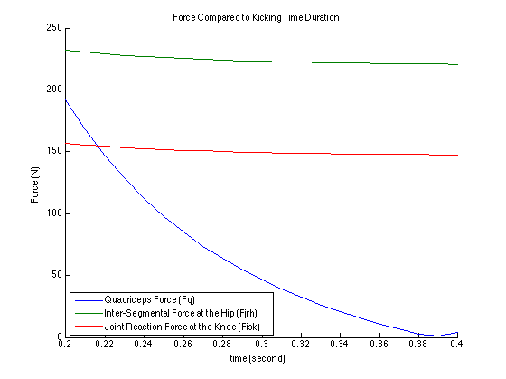

clc, clear all
warning('off');
Grav = 9.8;
step = 0.01;
for t = 0.2 : step : 0.4;
count = (single(t/step) - 19);
Iulh = 0.25;
Aul = [0, 0, 0];
Wul = [0, 0, 4];
Oul = 0;
Rul = [0, -.58, 0];
Fulw = [0, -75, 0];
Rulw = [0, -0.26, 0];
Illk = 0.2;
Ooll = -90 * pi/180;
Ofll = -15 * pi/180;
AlphaLL = [0, 0, (((Ofll - Ooll)*2)/t^2)];
Wll = AlphaLL*t;
Oll = 15;
Lll = .50;
Rll = -Lll*[sind(Oll), cosd(Oll), 0];
Fllw = [0, -45, 0];
Rllw = [-0.3*sind(Oll), -0.3*cosd(Oll), 0];
syms Fjrh Fiskx Fisky Fiskz Fpt;
Ollpt = 45;
Rkpt = 0.05;
Atangk = cross(-Rul, Aul);
Anormk = -Rul.*(norm(Wul))^2;
Ak = Atangk + Anormk;
Atangll = cross(-Rllw, AlphaLL);
Anormll = -Rllw.*(norm(Wll))^2;
Allnt = Atangll + Anormll;
All = Ak + Allnt;
nMllk = Illk*AlphaLL;
Mwll = cross(Rllw, Fllw);
Mfpt = [0, 0, Rkpt*Fpt];
tempFpt = solve(nMllk == Mwll + Mfpt, Fpt); tempFpt = double(tempFpt);
Fpt = [tempFpt*cosd(Ollpt), tempFpt*sind(Ollpt), 0];
nFll = (norm(Fllw)/Grav).*All;
aFisk = [Fiskx, Fisky, Fiskz];
for i = 1:3
solFisk(i) = solve(nFll(i) == Fpt(i) + Fllw(i) + aFisk(i), aFisk(i));
tempFisk(i) = solFisk(i);
end
Fisk = double(tempFisk);
Mh = cross(Rul, Fisk);
Fjrh = Fisk - Fulw;
FptLog(count) = norm(Fpt);
FjrhLog(count) = norm(Fjrh);
FiskLog(count) = norm(Fisk);
T(count) = t;
end
figure(1), hold all, plot(T, FptLog), plot(T, FjrhLog), plot(T, FiskLog),...
legend('Quadriceps Force (Fq)', 'Inter-Segmental Force at the Hip (Fjrh)', 'Joint Reaction Force at the Knee (Fisk)', 'Location', 'SouthWest'),...
title('Force Compared to Kicking Time Duration')
xlabel('time (second) '), ylabel('Force (N)')
tM = table(T', FptLog', FjrhLog', FiskLog');
tM.Properties.VariableNames{'Var1'} = 'Seconds';
tM.Properties.VariableNames{'Var2'} = 'Fpt';
tM.Properties.VariableNames{'Var3'} = 'Fjrh';
tM.Properties.VariableNames{'Var4'} = 'Fisk';
disp(tM)
Seconds Fpt Fjrh Fisk
_______ ______ ______ ______
0.2 191.92 231.9 157.06
0.21 167.58 230.3 155.57
0.22 146.48 228.96 154.34
0.23 128.08 227.82 153.31
0.24 111.92 226.84 152.46
0.25 97.67 226.01 151.74
0.26 85.03 225.28 151.12
0.27 73.767 224.65 150.6
0.28 63.69 224.09 150.14
0.29 54.637 223.6 149.75
0.3 46.474 223.16 149.4
0.31 39.088 222.78 149.1
0.32 32.384 222.43 148.83
0.33 26.28 222.11 148.59
0.34 20.707 221.83 148.38
0.35 15.604 221.58 148.19
0.36 10.921 221.35 148.02
0.37 6.6125 221.13 147.87
0.38 2.6395 220.94 147.73
0.39 1.0319 220.76 147.6
0.4 4.4313 220.6 147.49
